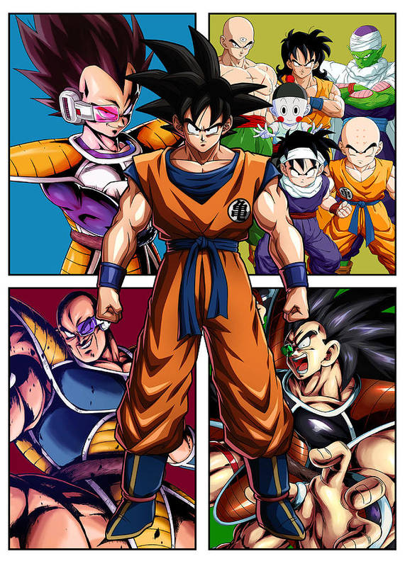
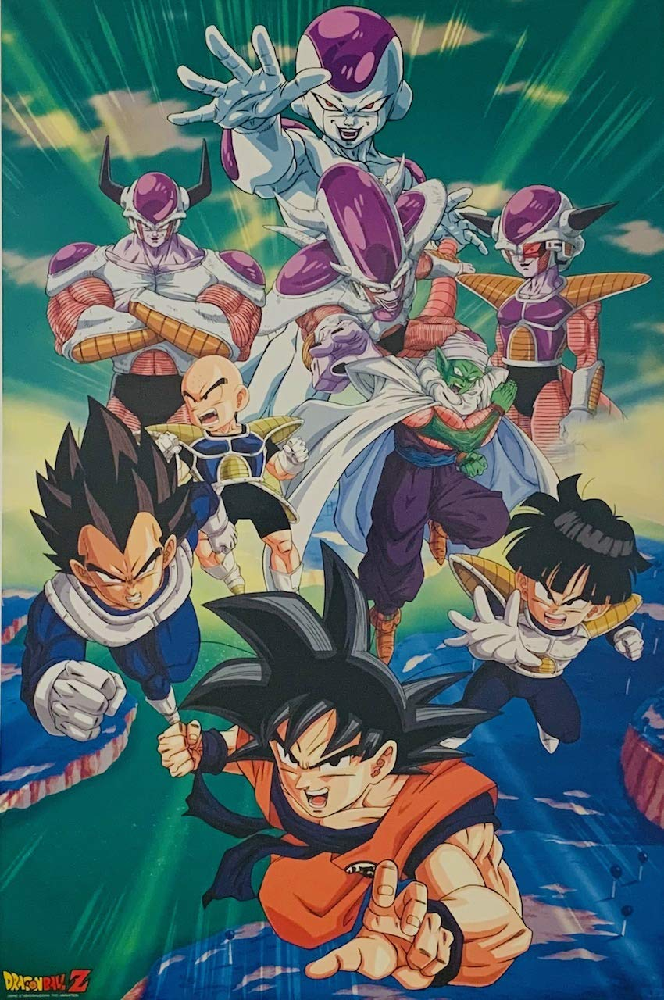
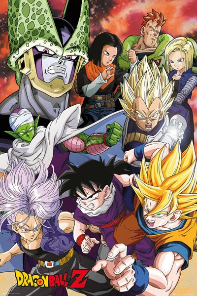
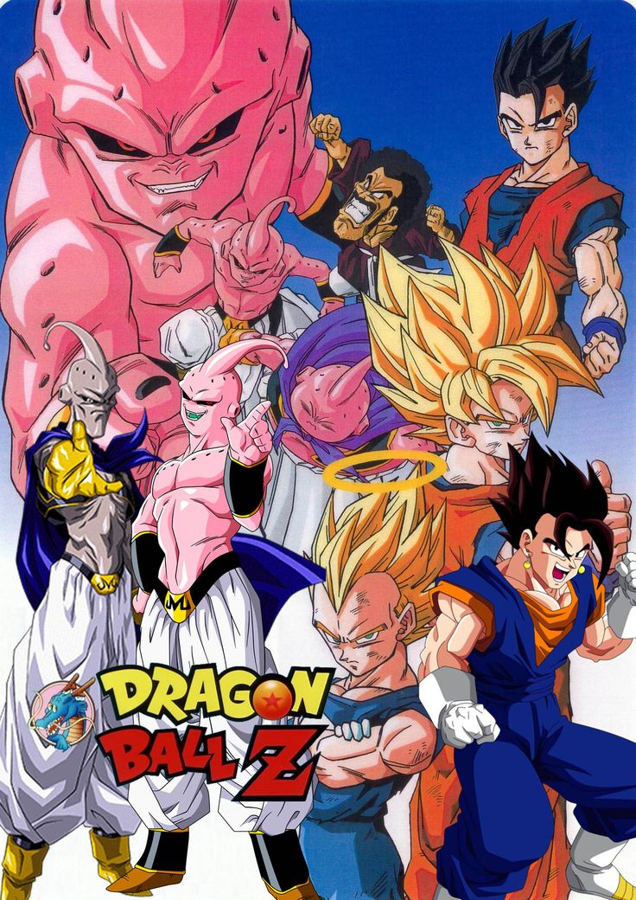

Saga de los sayayins
La saga de los Saiyajin comienza con la llegada de Raditz a la Tierra, revelando que Goku es un Saiyajin. Posteriormente, Vegeta y Nappa llegan al planeta con el objetivo de obtener las Esferas del Dragón. La batalla culmina con la transformación de Goku en Super Saiyajin y la derrota de Vegeta.
Episodios notables:
- La llegada de Raditz
- Goku entrena con Kaio-Sama
- La batalla en la Tierra contra los Saiyan
Saga de Freezer
En esta saga, Goku y sus amigos viajan al planeta Namek en busca de las Esferas del Dragón para revivir a sus amigos fallecidos. Enfrentan a las fuerzas de Freezer, un tirano galáctico que también busca las esferas. La saga culmina con la transformación de Goku en Super Saiyajin y la derrota de Freezer.
Saga de Cell
Cell, un bio-androide, viaja en el tiempo para absorber a los androides y alcanzar su forma perfecta. Los Guerreros Z luchan contra Cell y sus secuaces para evitar su objetivo. La saga concluye con la victoria de Gohan y la destrucción de Cell.
Saga sayayines
En esta saga, el mago Babidi busca revivir a Majin Boo, un ser extremadamente poderoso. Los Guerreros Z se enfrentan a distintas formas de Majin Boo, incluyendo a un Boo bueno. La saga culmina con la derrota de Majin Boo gracias a la Genkidama de Goku.
